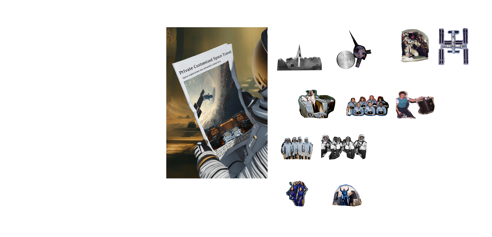
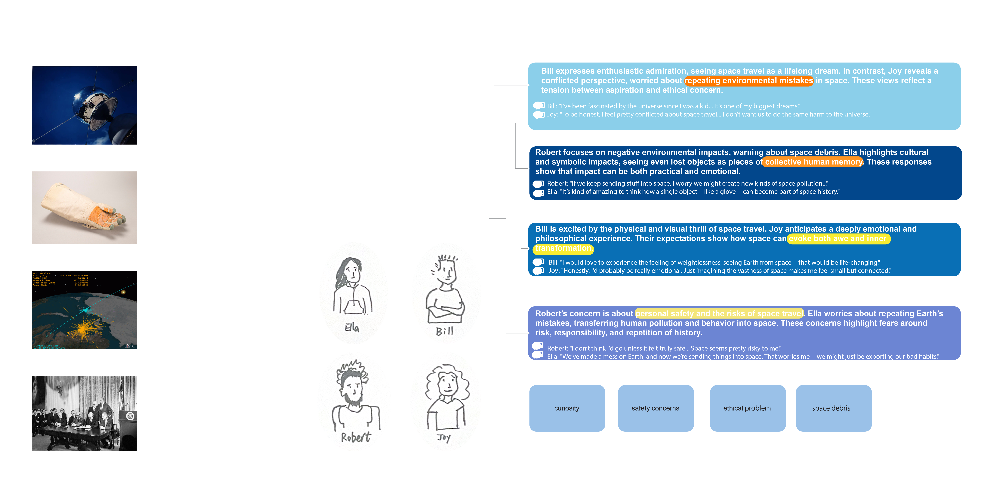
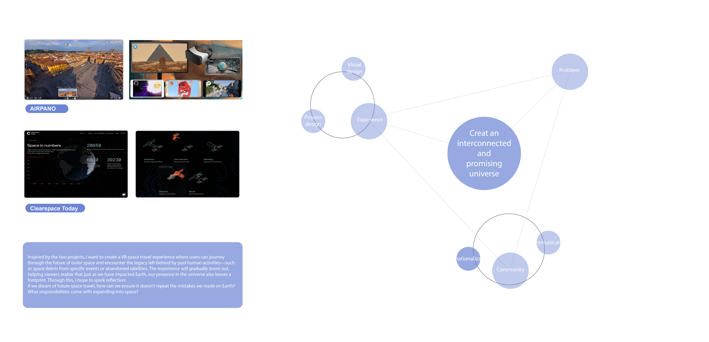
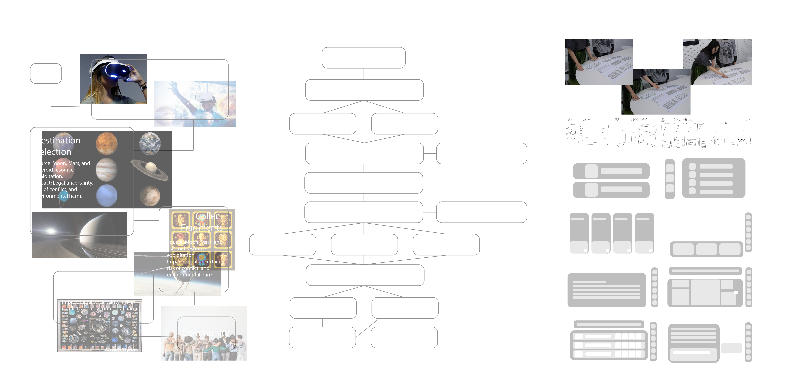

01
Defunct Satellites
Source Abandoned or failed spacecraft.
Impact Crowded orbits raise collision risks and endanger active missions.
A virtual archaeology of orbit — excavating the residue of half a century of human spaceflight as a way to ask what kind of inheritance we are building above the Earth.
Experience the VR →"If we dream of future space travel, how can we ensure it doesn't repeat the mistakes we made on Earth? What responsibilities come with expanding into space?"
Since the early 2000s, space travel has undergone a remarkable transformation — from a government-led endeavor limited to professional astronauts to an increasingly commercialized, democratized, and international pursuit.
What was once science fiction has gradually become reality. Private companies like SpaceX, Blue Origin, and Virgin Galactic have pioneered technologies that open space to civilians. A frontier where tourism, research, and global collaboration coexist.

The world's first guided ballistic missile.
The space dog — the first living creature to orbit Earth.
The farthest human-made object from Earth.
Exploded 73 seconds after liftoff.
First commercial space tourist.
Long-term human spaceflight.
First fully private crew to the orbiting complex.
All-female suborbital flight.
Every dream of space arrives carrying a shadow. The objects, fragments, and forgotten gestures that orbit Earth — silent, fast, and unaccounted for.
Source Abandoned or failed spacecraft.
Impact Crowded orbits raise collision risks and endanger active missions.
Source Dropped by astronauts during extravehicular repairs.
Impact Small but fast debris that threatens spacecraft and the ISS.
Source Fuel residue explosions or satellite collisions.
Impact Rapid debris multiplication; long-term threat to space operations.
Source Moon, Mars, and asteroid resource exploitation.
Impact Legal uncertainty, risk of conflict, and environmental harm.
Four interviewees, four perspectives. Their voices mapped the design space between curiosity, ethical concern, hope, and history.

"I've been fascinated by the universe since I was a kid. It's one of my biggest dreams. I would love to experience the feeling of weightlessness, seeing Earth from space — that would be life-changing."
"To be honest, I feel pretty conflicted about space travel. I don't want us to do the same harm to the universe. Imagining the vastness of space makes me feel small but connected."
"If we keep sending stuff into space, I worry we might create new kinds of space pollution. I don't think I'd go unless it felt truly safe — space seems pretty risky to me."
"It's kind of amazing to think how a single object — like a glove — can become part of space history. We've made a mess on Earth, and now we're sending things into space. We might be exporting our bad habits."
Two reference projects: an immersive VR tour of Earth's fragile ecosystems, and a system collecting and repurposing space debris.
Humanity's growing impact on space — debris, abandoned satellites — often goes unnoticed by the public.
First-person VR journey that gradually zooms out, helping viewers realize our presence in the universe also leaves a footprint.
User sharing, ranking, friends mode, single mode — turning observation into collective reflection.

Six interactive moments inside the VR space — the player chooses an outfit, picks a destination, collects fragments of orbit, and shares discoveries with a small community.

Friends mode or single mode. Begin the journey.
A short orientation — the meaning of fragments revealed slowly.
Each destination offers a different visual atmosphere.
Badges marking what has been seen and gathered.
Begin exploration. Drift. Look. Collect.
Share what was found. Compare paths. Reflect.
Space Archaeology is, in the end, less about debris than about memory — the strange way history continues to orbit us. To dream of future space travel is to inherit a record of everything we have lost in trying to leave.
— 2025 · Zhang Yichi